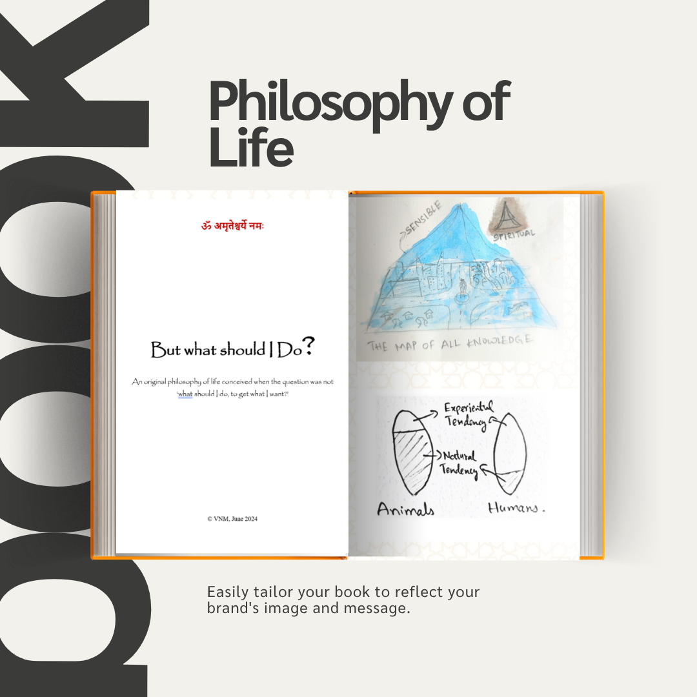

Talents & Pursuits

Philosopher & Writer
Author of Philosophy of Life, a synthesis of logic, dharma, and spiritual reasoning.
Engineer & Innovator
Creator of An Epistomological Map of Aerospace Engineering, exploring how knowledge structures mirror the cosmos.

Artist of Thought
Developing The Theory of Aesthetics, uniting perception, form, and inner awareness.